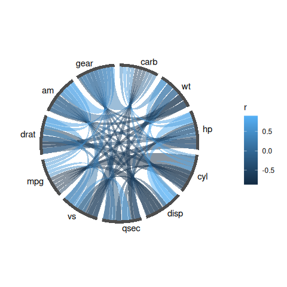
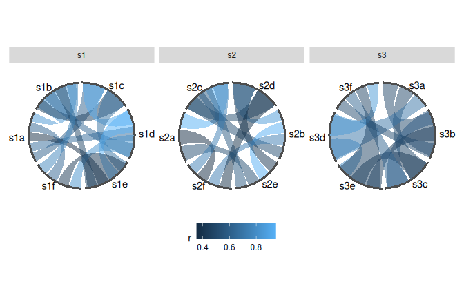
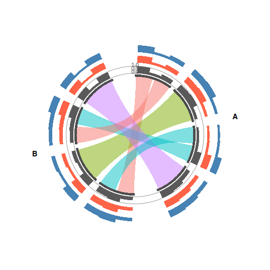
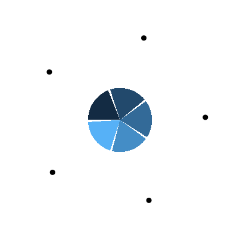

Circular layouts as ggplot2 data: chord diagrams, tracks and axes you can facet, scale, and compose.
The one idea. A circular layout is a table of angles. ggcircos computes it once — every node’s arc, every link’s slot inside that arc — and keeps it as data. From that, every layer is an ordinary ggplot2 layer: scale_fill_*() gives you a legend, facet_wrap() gives you multiple rings, patchwork composes them, saveRDS() round-trips the whole plot. This is what a base-graphics circos cannot do, and what ggplot2 chord packages that draw one fixed diagram do not need.
install.packages("ggcircos") # or:
remotes::install_github("YuLab-SMU/ggcircos")Thirty seconds
p <- ggcircos(cor(mtcars), order = "hclust") +
geom_chord(aes(fill = r)) +
geom_node_arc() +
geom_node_text()
p
ggcircos() builds the layout and returns a plain ggplot object. The geoms read the layout; they never recompute it.
What this buys you
Many rings from one layout (facet_wrap)
One ggcircos() call, one ring per sample — each with its own node set and its own layout. by = names the node column that says which ring a node belongs to; facet_wrap() on the same column splits them apart. (Without by =, facet_wrap() only splits the chords and every panel shares one ring.)
set.seed(42)
mk <- function(s) {
# six nodes, a random weighted graph on them, tagged with the sample
ids <- paste0(s, letters[1:6])
m <- matrix(runif(36), 6, 6); m <- (m + t(m)) / 2; diag(m) <- 0
cells <- which(upper.tri(m) & m > 0.35, arr.ind = TRUE)
data.frame(
from = ids[cells[, 1]], to = ids[cells[, 2]],
r = m[cells], sample = s, stringsAsFactors = FALSE
)
}
links <- do.call(rbind, lapply(c("s1", "s2", "s3"), mk))
nodes <- data.frame(
id = unlist(lapply(c("s1", "s2", "s3"), function(s) paste0(s, letters[1:6]))),
sample = rep(c("s1", "s2", "s3"), each = 6),
stringsAsFactors = FALSE
)
ggcircos(links, nodes = nodes, by = "sample", order = "hclust") +
geom_chord(aes(fill = r)) +
geom_node_arc() +
geom_node_text() +
facet_wrap(~ sample) +
theme_circos(legend.position = "bottom")
Tracks, an axis, and sectors
tracks = declares radial bands outside the node ring; geom_track() plots into one; geom_track_axis() puts a readable ruler on it. Bands never overlap each other or the ring.
set.seed(7)
nodes <- data.frame(
id = c(paste0("g", 1:4), paste0("h", 1:4)),
genome = rep(c("A", "B"), each = 4)
)
links2 <- data.frame(
from = c("g1", "g2", "g3", "g4", "g1", "g3"),
to = c("h1", "h2", "h3", "h4", "h3", "h1")
)
trk <- data.frame(
id = rep(nodes$id, 3),
value = runif(24, 0.2, 0.9)
)
ggcircos(links2, nodes = nodes, sectors = "genome",
tracks = c(gc = 0.12, depth = 0.12, gene = 0.12)) +
geom_chord(aes(fill = from)) +
geom_node_arc() +
geom_track(data = trk, aes(x = value), node = id, band = "gc") +
geom_track(data = trk, aes(x = value), node = id, band = "depth",
fill = "tomato") +
geom_track(data = trk, aes(x = value), node = id, band = "gene",
fill = "steelblue") +
geom_track_axis(band = "gc", limits = c(0, 1)) +
geom_sector_label() +
theme_circos(legend.position = "none")
The layout is yours
layout_nodes() returns the angle table. Draw a node ring with nothing but geom_segment() and coord_circos() if you want — the geoms in this package are ordinary consumers of the same table.
nd <- layout_nodes(circos_layout(cor(mtcars)[1:5, 1:5], order = "hclust"))
nd
#> id label sector order n_links theta0 theta1 theta width r
#> 1 hp hp all 1 4 0.000000 1.193805 0.5969026 1.193805 1
#> 2 cyl cyl all 2 4 1.256637 2.450442 1.8535397 1.193805 1
#> 3 disp disp all 3 4 2.513274 3.707079 3.1101767 1.193805 1
#> 4 mpg mpg all 4 4 3.769911 4.963716 4.3668138 1.193805 1
#> 5 drat drat all 5 4 5.026548 6.220353 5.6234508 1.193805 1
ggplot(nd, aes(xmin = 1, xmax = 1.03, ymin = theta0, ymax = theta1)) +
geom_rect(aes(fill = order)) +
geom_point(aes(x = 1.08, y = theta), size = 2.5, inherit.aes = FALSE) +
coord_circos(limits = c(0, 2 * pi)) +
theme_circos(legend.position = "none")
Inputs
| Input | Example |
|---|---|
| correlation matrix | ggcircos(cor(mtcars)) |
| link table | ggcircos(links, nodes = nodes, sectors = "genome") |
| igraph / tbl_graph | ggcircos(igraph::graph_from_data_frame(links)) |
Documentation
-
vignette("correlation")— chord diagrams from a matrix: ordering, colour, sectors, input shapes. -
vignette("tracks")— tracks, axes, scales, tiles, facets. -
vignette("from-circlize")— the migration map, and an honest list of what ggcircos does not do yet.
Status and limits
v0.1.0 targets ggplot2 ≥ 4.0 only (it is built on coord_radial()). Not yet: angular axes, interactive output. These are deliberate — see vignette("from-circlize").